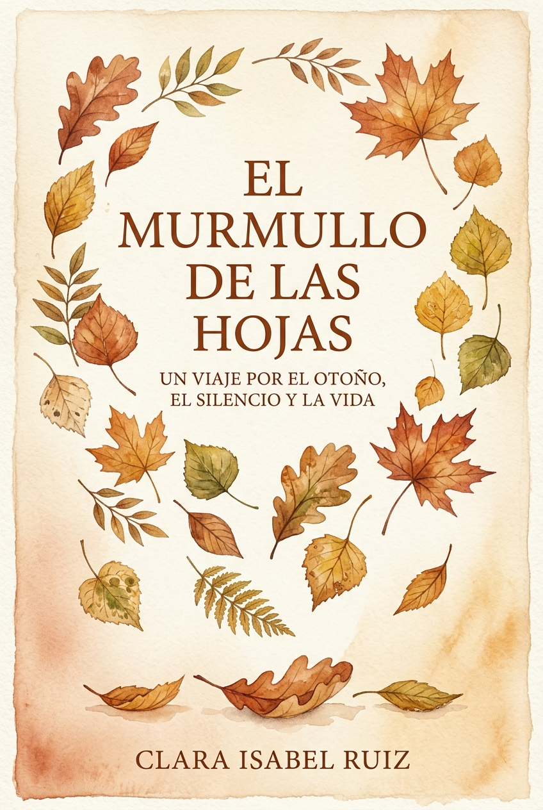

Recomendado
Narrativa de otoño
El murmullo de las hojas
Una novela intimista sobre un regreso al campo, la recolección de historias olvidadas y los silencios que sanan bajo las arboledas doradas de octubre.